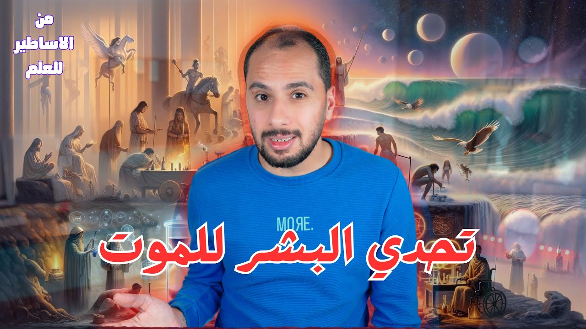

أساطير وتاريخ وعلم
تحدي البشر للموت والبحث عن الخلود
من ملك Uruk اللي ساب مملكته يدوّر على سر الخلود، لـOrpheus اللي نزل العالم السفلي عشان حبيبته، للخيميائيين وحجر الفلاسفة، لحد أبحاث الشيخوخة وتجارب الاقتراب من الموت: الإنسان بيحاول يتحدى الموت من آلاف السنين. طب الخلود ممكن يكون فين؟

شغّل الحلقةقبل الحلقة دي أنا كنت بخاف من الموت، لكن دلوقتي حسيته مغامرة هتكشف لنا واحد من أهم أسرار الكون. يا ترى إيه هو سر الموت، وإيه تاريخ الإنسان معاه؟ هنا هجيب لك القصة من البداية، وهحط قدامك كل الأفكار، يمكن تجاوبك على الأسئلة اللي بتدور في دماغك.
تحدي الإنسان للموت، أو محاولة الهرب منه، بيبتدي من آلاف السنين، لدرجة إنه اتوثّق في واحدة من أقدم الأعمال الأدبية في التاريخ.
Gilgamesh: الملك اللي ساب مملكته عشان يدوّر على الخلود 0:32
القصة بتحكي عن ملك اسمه Gilgamesh، ملك Uruk (أوروك) العظيمة. وبحسب الأسطورة كان جزء منه إله وجزء بشر1، وكان شخص مغرور، مفيش أي حد بقوته، وكان بيفتري على شعبه. وبسبب ظلمه ده الشعب بدأ يشتكي للآلهة، فقررت تعمل توازن على الأرض، وبعتت شخص تاني اسمه Enkidu عشان يكون ندّ لـGilgamesh في القوة، ويحاول يقلل من غروره.
لكن واضح إن آلهة الأساطير ما كانتش بتشوف المستقبل، لأن اللي حصل بعد كده ما كانش متوقع. Enkidu دخل في حرب مع Gilgamesh، وبدل ما الحرب دي تنتهي بهزيمة طرف من الاتنين، انتهت بصداقتهم. Gilgamesh شاف في Enkidu شخص شبهه، قوي زيه، ممكن يشاركه مغامراته بدل ما هو زهقان من معاملته للبشر العاديين. والاتنين أعلنوا تحديهم للآلهة، ودخلوا مغامرات وحروب كتير مع وحوشها وانتصروا عليها.
ده طبعًا أغضب الآلهة، واعتبروه تحدي لإرادتها، فقرروا يعاقبوهم بلعنة تصيب Enkidu ويموت. Gilgamesh حزن على صاحبه جدًا، ولأول مرة حس بالخوف، أول مرة يحس إن فيه حاجة أقوى منه، لأنه شاف بعينه انتصار الموت على صديقه. واعتبر الموت عدو بيهدده هو شخصيًا، فقرر يسيب مملكته ويبدأ رحلة يتحدى فيها الموت بحثًا عن الخلود.
بعد كده سمع عن شخص اسمه Utnapishtim (أوتنابشتيم)، الشخص الوحيد اللي نجا من الطوفان وعارف سر الخلود، فبدأ يدور عليه في كل مكان. وفي الرحلة دي دخل مغامرات كتيرة، وواجه مواقف صعبة، واتعلم دروس كتيرة جدًا في الحياة، لغاية ما وصل في النهاية لـUtnapishtim، اللي قال له إن مفيش فايدة من البحث عن الخلود، وإن الموت جزء من الحياة.
والأسطورة بتنتهي باكتشاف عظيم لـGilgamesh: الخلود مش في مواجهة الموت أو الهرب منه، الخلود إنه يسيب أثر من خلال خدمة مملكته وإلهام شعبه. فرجع من رحلة تحدي الموت وهو مسلّم ومستسلم له، وقرر يبدأ تحدي جديد: إنه يخلّد أثره. ومات Gilgamesh، وفضلت قصة تحديه للموت وبحثه عن الخلود خالدة لآلاف السنين.
وعلى الرغم إن محاولة Gilgamesh قصة أسطورية، إلا إنها بتعبر عن خوف الإنسان من عدو مجهول، مالوش شكل محدد عشان يواجهه، ولا وقت معين بيجي فيه علشان يستعد له.
Orpheus: لما الحب يخلّيك تنزل للعالم السفلي 2:46
لكن تحدي الإنسان للموت ما كانش بسبب الخوف منه بس. فمثلًا بعد Gilgamesh بحوالي 1300 سنة12، واحدة من الأساطير اليونانية بتحكي لنا عن تحدي مختلف، تحدي رومانسي شويتين.
بطله كان فنان اسمه Orpheus (أورفيوس)، واللي بحسب الأسطورة كان بيعزف أروع الألحان على القيثارة، لدرجة إن الحيوانات كانت بتقف وتسمعه. وبما إنه فنان كان رومانسي، وده كان باين في علاقته بـEurydice (يوريديكي)، البنت اللي كان بيحبها، واللي كان هاريها عزف طول اليوم. لكن للأسف اللحظات الحلوة مش بتستمر، وجه الموت وخد حبيبته.
حبه لـEurydice ما خلّاهوش يستسلم، وقرر يواجه الموت على أرضه كمان، فخرج في رحلة للعالم السفلي، ومش معاه غير القيثارة، سلاحه الوحيد. كل ما كان يواجه وحش كان يعزف له فيعدّيه، لغاية ما وصل لإله العالم السفلي Hades (هاديس) وزوجته، واللي سمعوا قصته الحزينة على أنغام القيثارة فتأثروا جدًا، وقرروا يعملوا معاه اتفاق: Hades هيسمح له ياخد حبيبته، بس بشرط واحد، إنه ما يبصّش عليها خالص طول ما هما في عالم الأموات، لغاية ما يوصلوا للنور.2
Orpheus وافق، وابتدى يطلّع Eurydice من عالم الأموات. الرحلة كانت صعبة وطويلة، وهو كان خايف على حبيبته اللي كانت وحشاه جدًا. ولما بدأوا يقربوا من النور، الملزوق ما قدرش يستنى، وبص عليها، وفي اللحظة دي اختفت Eurydice ورجعت تاني لعالم الأموات، بس المرة دي للأبد.
وبغض النظر عن تلزيق Orpheus، القصة بتأكد على سبب تاني خلّى البشر عبر التاريخ يتحدوا الموت: إنه بياخد أرواح أحبابهم ويجبرهم على الفراق. طب السؤال هنا: هل في حد، حتى في الأساطير القديمة، قدر يتحدى الموت ويكسبه؟
Sisyphus: هل فيه حد قدر يخدع الموت؟ 4:26
في أسطورة تانية فيه واحد اسمه Sisyphus (سيزيف)، الراجل ده كان مكّار جدًا، ومشهور بحيله وألاعيبه، وما كانش بيعتق حد خالص، لدرجة إنه خدع الآلهة نفسهم. والأسطورة بتقول إن Sisyphus قرر يعمل حاجة ما حدش عملها قبله: قرر يخدع الموت.
وبحسب الأسطورة برضه، كان فيه أمر إلهي بموت Sisyphus، فلما جه إله الموت علشان ياخده، خدعه وحبسه. المشكلة هنا إنه وقّف الموت تمامًا، وبالتالي ما كانش فيه حد بيموت. وده طبعًا خلّى الآلهة تغضب جدًا، وقررت تعاقب Sisyphus عقاب أبدي في العالم الآخر.
والعقاب إنه كل يوم يحاول يزق صخرة ضخمة لغاية قمة الجبل، ولو قدر يطلّعها على القمة العقوبة هتنتهي. لكن Sisyphus فضل كل يوم يزق الصخرة، وقبل ما يوصل للقمة كانت بتتزحلق تاني، وهكذا في حالة أبدية مش بتنتهي. العقاب كان بيجسّد فكرة إن كل محاولات البشر لتحدي الموت كانت دايمًا بتفشل، زي ما Sisyphus عمره ما نجح إنه يوصّل الصخرة لقمة الجبل.
الخيمياء: هل في ناس حاولت تتحدى الموت بطرق عملية؟ 5:27
طب بعيدًا عن الأساطير اللي من الواضح إن كلها رمزية: هل في أحداث حقيقية لأشخاص حاولوا فعلًا يتحدوا الموت بطرق عملية؟ السؤال ده بيودينا للخيمياء، اللي نقدر نقول عليها أصل الكيميا الحديثة.
من التفسيرات المشهورة إن كلمة خيمياء جاية من اسم مصر القديمة، وإن المصريين القدماء أول ناس مارسوها في التحنيط وبحثهم عن الخلود. لكن اللي بيقوله المؤرخين إن بداية الخيمياء الغربية بترجع لمصر في العصر اليوناني، وإن ربطها بأيام الفراعنة ما عليهوش دليل تقريبًا، وأصل الكلمة نفسه اقتراح من ضمن اقتراحات.3
والخيميائيين عبر التاريخ كان اهتمامهم الأساسي إنهم يعملوا تجارب عن التحولات، سواء تحولات المادة من معادن عادية لدهب، أو التحولات الروحية في حياة الإنسان. كمان خلطوا الأعشاب واستخدموها في الطب، واهتموا بالتنجيم وحركة الفلك. لكن أغرب حاجة هي اهتمامهم بحاجة اسمها حجر الفلاسفة، اللي بيه يقدروا يحولوا المعادن لدهب، ويعملوا وصفة الخلود، أو إكسير الحياة.3
وعلى مر العصور ظهرت قصص كتير عن أشخاص دوّروا على سر الخلود، وأشهرهم Alexander the Great. والحكاية المشهورة عنه بتقول إنه دوّر على مية الحياة، لكن اللي لقاها وشرب منها كان الطباخ بتاعه، مش هو.4
Nicolas Flamel وSt. Germain: حكايات ولا حقيقة؟ 6:32
من الأسماء اللي ارتبطت بالحكايات دي Nicolas Flamel (نيكولا فلاميل)، اللي بيُعتبر من أشهر الخيميائيين في التاريخ. والحكاية المشهورة بتقول إنه اكتشف حجر الفلاسفة اللي قدر بيه يحول المعادن العادية لدهب، وإنه وصل له لما فك رموز كتاب قديم، اسمه في الحكاية Abraham the Jew (إبراهيم اليهودي). لكن الثابت إن Flamel كان كاتب عمومي في Paris (باريس) في القرن الأربعتاشر الميلادي، مش تاجر كتب زي ما بيتقال كتير، وإن حكايات الخيمياء عنه ظهرت بعد موته بقرون.5
وفي القرن التمنتاشر الميلادي ظهر شخص مثير للجدل اسمه Count of St. Germain (الكونت سان جيرمان)، واللي بيُعتبر من أشهر الشخصيات الغامضة في التاريخ الغربي. كان شخص غني، وظهر وسط الطبقات الراقية في أوروبا، وبيتكلم لغات كتير منها الإنجليزية والفرنسية والبرتغالية، وكان عنده معرفة كبيرة في مجالات مختلفة.
وده طبعًا زوّد الغموض حوالين شخصيته، خصوصًا بعد ما اتقال إنه ادّعى إنه عايش بقاله قرون، وكان بيوصف أحداث تاريخية حصلت من مئات السنين وكأنه عاصرها وشافها بعينيه.6 وبحسب القصة المتداولة، St. Germain كان محافظ دايمًا على شبابه، وما كانش بيظهر عليه أي علامات لتقدم العمر، ويقال إنه اكتشف إكسير الحياة، أو على الأقل عمل خلطة تمدد عمره وتخليه دايمًا شباب.
ومع إن مفيش معلومات واضحة عن تاريخ ميلاده، إلا إنه توفى في القرن التمنتاشر الميلادي.6 لكن الأغرب إن فيه ناس كتير ادّعت إنها شافته بعد وفاته، وده زوّد الأساطير اللي بتتقال عنه.
إيه اللي شد Newton وJung للخيمياء؟ 7:52
ولو كنت فاكر إن محاولات الخيميائيين للوصول لحجر الفلاسفة وإكسير الحياة حاجة مش منطقية، فحابب أقول لك إن الفكرة دي جذبت علماء كتير زي Isaac Newton (إسحاق نيوتن)، اللي اهتم بالخيمياء ودراسة مبادئها، وكان بيسعى كمان إنه يوصل لإكسير الحياة.7 أما إن مبادئها ساعدته في اكتشافاته العلمية زي نظريته عن الجاذبية، فده رأي بعض المؤرخين، ولسه عليه نقاش.8
ده غير Carl Jung (كارل يونج)، الطبيب السويسري اللي أسس علم النفس التحليلي9، واللي كان عنده اهتمام كبير جدًا بالخيمياء الروحية، ودمج ما بين مبادئ الخيمياء وعلم النفس.
ومش بس Jung وNewton اللي اهتموا بمبادئ الخيمياء؛ كتير كمان من العلماء المسلمين اهتموا بيها، خاصة في الفترة ما بين القرن التامن والأربعتاشر الميلادي. ومن أشهر الأسماء اللي ارتبطت بتطور الخيمياء وازدهارها جابر بن حيان، وإن كان الباحثين لسه مختلفين إذا كان شخص تاريخي فعلًا، ولا اسم اتكتبت بيه كتابات مدرسة كاملة من الخيميائيين.10
وعلى عكس الأساطير القديمة، الخيمياء فعلًا حاولت تقف قدام الموت بطرق قابلة للتطبيق، من خلال خلطات بالمواد المختلفة، أملًا في الوصول لإكسير الحياة. ومع إنها على مدار تاريخها الطويل دمجت ما بين التجارب والفلسفة والمفاهيم الروحية وأحيانًا السحر، إلا إنها ساهمت بشكل كبير في ظهور علوم كتير زي الكيميا.3
العلم الحديث وصل لفين في محاربة الشيخوخة؟ 9:02
وعلى ذكر العلوم، يا ترى العلم الحديث وصل لإيه في أبحاث الخلود ومواجهة الموت؟ على الرغم إن العلوم الحديثة مش مقتنعة بفكرة إكسير الحياة، إلا إنها في نفس الوقت بتحاول تطوره أو تصنعه بطريقة أو بأخرى.
فمثلًا في الهندسة الجينية، العلماء بيعملوا تجارب بهدف تحدي الشيخوخة وتجديد الخلية. ده غير الطب التجديدي، اللي بيستخدم الخلايا الجذعية علشان يصلّح ويستبدل الأنسجة وحتى الأعضاء في جسم الإنسان. لكن لحد دلوقتي مفيش دوا معتمد لعلاج الشيخوخة نفسها، لأن FDA (هيئة الغذاء والدوا الأمريكية) ما بتعتبرش الشيخوخة مرض.11 وده غير محاولات تجميد الأشخاص بعد الموت، على أمل إنهم يلاقوا طريقة في المستقبل يرجّعوهم بيها للحياة تاني.
ولو ركزت في الطرق المستخدمة حاليًا، هتلاقيها مش بتختلف خالص عن محاولات الإنسان على مر العصور: من الأساطير، لطرق الفراعنة في التحنيط أملًا في رجوع الروح للجسد تاني، لبحث الخيميائيين عن إكسير الحياة اللي بيحارب الشيخوخة وبيمدد عمر الإنسان. نفس المحاولات، حتى لو اختلفت طرقها وأشكالها، أو اتقال عنها طرق علمية.
والسؤال هنا: لو نجح العلم فعلًا إنه يحارب الأمراض، ويقضي على الشيخوخة، ويلاقي أدوية تمنح الشباب الدايم، هل هيبقى نجح فعلًا إنه يمنح الإنسان الخلود؟
يعني إيه موت أصلًا؟ 10:14
السؤال ده بياخدنا لخناقة تانية: إيه أصلًا تعريف الموت؟ الأديان السماوية بتتفق على مفهوم واحد للموت، وهو باختصار انفصال الروح عن الجسد. في اللحظة دي بيحصل الموت، وبعدها الأجساد بتتحلل، لكن الروح بتعيش للأبد بحسب عملها: لو خير هتبقى في الجنة أو الملكوت، ولو شر هتبقى في النار أو الجحيم.
أما الأديان القديمة زي الهندوسية والبوذية فليها مفهوم مختلف شوية: إن بموت الإنسان بيتولد من جديد في جسد جديد، في زمان ومكان مختلفين، وإن أعماله في حياته السابقة هي اللي بتحدد هيتولد في شقاء ولا في نعيم في حياته الجديدة، لغاية ما يوصل لمرحلة يتحرر فيها تمامًا من سلسلة الولادة. والمدارس الأساسية في الهندوسية بتتكلم عن روح ثابتة، لكن البوذية بتقول إن مفيش ذات ثابتة ودايمة، مع إنها بتؤمن بإعادة الميلاد.12
وعكس الأديان، العلم مش شايف الروح أساسًا، ومش بيعترف بوجودها، لسبب بسيط: إنه مش قادر يراقبها أو يدرسها أو يعمل عليها تجارب. طيب، بما إن العلم مش بيعترف بوجود الروح، إيه تفسيره للموت؟
تجارب الاقتراب من الموت: الناس دي شافت إيه؟ 11:18
كتير من العلماء بيشوفوا إن الموت هو فناء للإنسان، أو العدم. ومع ذلك فيه تجارب اتسمّت باسم تجارب الاقتراب من الموت، ودي حكايات ناس ماتوا تقريبًا ورجعوا تاني، وأقصد هنا زي الناس اللي حصل لهم سكتة قلبية، واتعمل لهم إنعاش وعاشوا.
ومن أشهر الشغل في الموضوع ده اللي عمله دكتور Raymond Moody (ريموند مودي) في كتابه Life After Life، اللي جمع فيه شهادات لحالات مرت بتجربة الاقتراب من الموت. الناس دي حكت عن اللي شافوه في الدقايق اللي كانوا فيها على عتبة الموت. والملفت إن الناس دي كان لها معتقدات دينية مختلفة عن بعض، إلا إن اللي حكوه كله كان بيدور حوالين كام سيناريو متكرر.13
مجموعة قالت إنهم شافوا حياتهم بتمر قدام عينيهم بكل تفاصيلها، وأنا شخصيًا أعرف حد مر بالتجربة دي. ومجموعة تانية قالوا إنهم خرجوا برّه جسدهم وشافوا نفسهم والدكاترة بيحاولوا يسعفوهم. ومجموعة قالوا إنهم حسوا بشعور عميق من السلام والطمأنينة، ودول كانوا الناس اللي شافوا نفسهم جوه نفق ضلمة وفي آخره نور. وناس تانية قالوا إنهم شافوا كائنات نورانية.
الغريب إن معظم الناس دي أكدوا إنهم مش لاقيين كلمات توصف الحالة أو الشعور أو المنظر اللي شافوه. واحدة منهم قالت إن العالم اللي شافته كان مختلف ومتعدد الأبعاد، غير عالمنا ثلاثي الأبعاد، وبالتالي صعب توصفه بكلماتنا.
الشهادات دي اتجمعت من مقابلات وحكايات شخصية، وبتواجه انتقادات وتفسيرات من علماء بينكروا وجود الحياة بعد الموت.13 ومن ضمن التفسيرات دي إن الناس اللي مروا بتجارب الاقتراب من الموت شافوا أحداث نسجها عقلهم الباطن من المعتقدات اللي كانوا بيعتقدوها.
لو بتدور على الخلود، تلاقيه فين؟ 12:53
وبعيدًا عن تفسيرات بعض العلماء لتجارب الاقتراب من الموت، أو حتى عدم اقتناعهم بوجود حياة بعد الموت، فلازم تعرف حاجة مهمة جدًا: نضارة العلم بتشوف العالم ثنائي الأبعاد. ومع إنها مش بتخليه يشوف البعد الثالث، وأقصد هنا البعد الروحي، إلا إنها نقطة قوة في العلم، بتخليه دايمًا يفترض إنه غلطان ويطوّر في نفسه طول الوقت. أما لو عاوز تشوف البعد الثالث الروحاني، فلازم تلبس نضارة الإيمان، اللي بتخليك تشوف أشياء خارج نطاق الزمن والرؤية.
ولو بتدور على الخلود، فمن الواضح إن مش قدامك غير بوابة واحدة بس، وهي بوابة الموت. وافتكر دايمًا إن البذور عمرها ما هتبقى شجرة وتعيش فترة أكبر بكتير من حياتها وهي ثمرة، من غير ما تموت وتتدفن.
واتعلم من Gilgamesh، اللي اكتشف في النهاية نوع تاني من الخلود، وهو خلود الأثر، وحاول تسيب أثر يفكّر الناس بيك وإنت في الحياة التانية. وكل مرة تخاف فيها من الموت، البس نضارة الإيمان عشان تشوف البعد التاني، ممكن ساعتها تشوفه مغامرة مليانة باكتشافات عظيمة، وبداية لحياة بيغمرها سلام عميق وطمأنينة أبدية.
وما تنساش إن ما فيش حاجة صح 100%، حتى القاعدة اللي بتقول إن ما فيش حاجة صح 100%.
فصول الحلقة
- 0:32 Gilgamesh: الملك اللي ساب مملكته عشان يدوّر على الخلود
- 2:46 Orpheus: لما الحب يخلّيك تنزل للعالم السفلي
- 4:26 Sisyphus: هل فيه حد قدر يخدع الموت؟
- 5:27 الخيمياء: هل في ناس حاولت تتحدى الموت بطرق عملية؟
- 6:32 Nicolas Flamel وSt. Germain: حكايات ولا حقيقة؟
- 7:52 إيه اللي شد Newton وJung للخيمياء؟
- 9:02 العلم الحديث وصل لفين في محاربة الشيخوخة؟
- 10:14 يعني إيه موت أصلًا؟
- 11:18 تجارب الاقتراب من الموت: الناس دي شافت إيه؟
- 12:53 لو بتدور على الخلود، تلاقيه فين؟
أسئلة شائعة
إيه قصة Gilgamesh مع الخلود؟
بعد ما صاحبه Enkidu مات، Gilgamesh ساب مملكته ودوّر على Utnapishtim، الشخص الوحيد اللي نجا من الطوفان وعارف سر الخلود. وUtnapishtim قال له إن مفيش فايدة من البحث عن الخلود، فرجع وقرر إنه يخلّد أثره.
يعني إيه حجر الفلاسفة وإكسير الحياة؟
حجر الفلاسفة كان الحاجة اللي الخيميائيين صدقوا إنهم بيها يقدروا يحولوا المعادن لدهب ويعملوا وصفة الخلود، أو إكسير الحياة.
مين هو Nicolas Flamel؟
كاتب عمومي فرنسي عاش في Paris في القرن الأربعتاشر الميلادي، والحكاية المشهورة بتقول إنه اكتشف حجر الفلاسفة لما فك رموز كتاب قديم. وحكايات الخيمياء دي اتقالت عنه بعد موته بقرون.
إيه هي تجارب الاقتراب من الموت؟
شهادات ناس حصل لهم سكتة قلبية واتعمل لهم إنعاش وعاشوا، وأشهرها اللي جمعها Raymond Moody في كتابه Life After Life. منهم اللي شاف حياته بتمر قدام عينيه، واللي خرج برّه جسده، واللي شاف نفق ضلمة في آخره نور.
تصحيحات
- قلت إن Gilgamesh بحسب الأسطورة كان نص إله ونص بشر؛ الملحمة نفسها بتوصفه إنه تلتين إله وتلت إنسان.1
- في حكاية Alexander the Great: القصة المشهورة عنه في «قصة الإسكندر» بتقول إنه دوّر على مية الحياة، واللي لقاها وشرب منها كان الطباخ بتاعه، مش إنه اكتشف حجر الفلاسفة.4
- قلت إن Nicolas Flamel فك رموز كتاب اسمه «إبراهيم الخليل»؛ الكتاب في الحكاية اسمه «كتاب إبراهيم اليهودي». وقلت إنه كان تاجر كتب؛ Flamel كان كاتب عمومي في Paris بيكتب للناس العقود والجوابات، ومات سنة 1418، وحكايات الخيمياء عنه ظهرت في القرن السابع عشر، بعد موته بحوالي 200 سنة.5
- قلت «علم النفس التفسيري»؛ الصح إن Carl Jung أسس مدرسة علم النفس التحليلي.9
- قلت إن فيه أدوية في السوق الهدف منها تأخير الشيخوخة؛ هيئة الغذاء والدوا الأمريكية ما بتعتبرش الشيخوخة مرض، ولحد دلوقتي مفيش دوا معتمد لعلاج الشيخوخة نفسها.11
- قلت إن الأديان القديمة زي الهندوسية والبوذية بتتفق مع الأديان السماوية في وجود الروح؛ ده صحيح عن المدارس الأساسية في الهندوسية، لكن البوذية بتقول إن مفيش ذات أو روح ثابتة ودايمة، مع إنها بتؤمن بإعادة الميلاد.12
المصادر
- en.wikipedia.org https://en.wikipedia.org/wiki/Epic_of_Gilgamesh
- en.wikipedia.org https://en.wikipedia.org/wiki/Orpheus
- en.wikipedia.org https://en.wikipedia.org/wiki/Alchemy
- en.wikipedia.org https://en.wikipedia.org/wiki/Alexander_Romance
- en.wikipedia.org https://en.wikipedia.org/wiki/Nicolas_Flamel
- en.wikipedia.org https://en.wikipedia.org/wiki/Count_of_St._Germain
- en.wikipedia.org https://en.wikipedia.org/wiki/Isaac_Newton's_occult_studies
- history.duke.edu https://history.duke.edu/node/1386
- en.wikipedia.org https://en.wikipedia.org/wiki/Carl_Jung
- en.wikipedia.org https://en.wikipedia.org/wiki/Jabir_ibn_Hayyan
- statnews.com https://www.statnews.com/2022/08/09/anti-aging-projects-funding-much-discussed-trial-overlooked/
- en.wikipedia.org https://en.wikipedia.org/wiki/Anattā
- en.wikipedia.org https://en.wikipedia.org/wiki/Life_After_Life_(Moody_book)